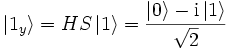
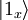

| x1 | x2 | x3 ← x1 x2 |
|---|---|---|
| 0 | 0 | 0 |
| 0 | 1 | 0 |
| 1 | 0 | 0 |
| 1 | 1 | 1 |
| x1 | x2 | x3 ← x1 x2 |
|---|---|---|
| 0 | 0 | 0 |
| 0 | 1 | 1 |
| 1 | 0 | 1 |
| 1 | 1 | 1 |
| x1 | x2 | x3 ← carry = x1 x2 |
x2 ← x1 x2 |
|---|---|---|---|
| 0 | 0 | 0 | 0 |
| 0 | 1 | 0 | 1 |
| 1 | 0 | 0 | 1 |
| 1 | 1 | 1 | 1 |
Classically we have to perform two computations of f to decide this problem. However, the Deutsch algorithm uses amplitude interferences of the superposed quantum states such that a single qubit measurement suffices to solve it. If the x qubit is 0, then the function is constant, otherwise it is balanced.
The files
Deutsch-00.qc,
Deutsch-01.qc,
Deutsch-10.qc,
Deutsch-11.qc
represent the four possible cases of f which can occur.
The Deutsch-Josza algorithm solves the similar problem for a function f: {0, 1}n → {0, 1} which maps n bits to one bit with the promise that the function is constant (i.e., f(x) = f(y) ) or balanced (i.e., for each x there are exactly 2n-1 different y such that f(x) ≠ f(y) ).
The files
Deutsch-Josza-0.qc
and
Deutsch-Josza-1.qc
correspond to the constant
functions f(x) = 0 and f(x) = 1, respectively,
whereas the other two circuits
Deutsch-Josza-balanced-even.qc
and
Deutsch-Josza-balanced-odd.qc
represent balanced functions where each even value gives 0 in one case,
and each odd value gives 0 in the other case.
f(x) = 4x mod 437.
By the first Fourier gate, the entire x-register is set into a superposition, such that by the subsequent function evaluation gate the y-register attains all possible values f(x). A measurement of the y-register then yields all in x-values entangled with the measured y value, satisfying f(x) = y. After an inverse quantum Fourier transform of the x-register giving a superposition with sharp probability amplitude maxima at
k ≈ sq/p, s = 0, 1, 2, ..., p
the multiples of the searched for period p; q denotes the total number of possible register states of the x-register, i.e., q = 2n with n the size of the register. (The probability maxima are best viewed by enabling the "length coloring" option in the configuration menu.) A second measurement then yields one of these k-values with high probability. Knowing the register size q, we have thus in fact measured the ratio s/p (with high probabilty, at least). The classical method of continued fraction then yields a fraction whose denominator is a divisor of the searched for period p. Hence several repetitions of this procedure then enable to find the period p of f, which in turn gives the essential hint to determine the prime factors of n = 437 = 19 · 23.For instance, a first measurement could give y = 301, which corresponds to the values x = 83, 182, 281, 380, 479, 578, 677, 776, 875, 974, ..., since the (searched for) period, or order, of 4 with respect to 301 is p = ord301(4) = 99, cf. http://math-it.org/Mathematik/Zahlentheorie/OrdnungWert.html. Since the register contains 12 qubits, we have q = 212 = 4096 possible register states, and hence there are 41 ≈ q/p x-values stored in the x-register. Thus the inverse QFT yields a register with high probability amplitudes for multiples k = 41s of 41. This yields a measured value 41s, and the continued fraction algorithm yields 41s/4096 ≈ s/99, whose denominator is the searched for period or one of its divisors (in case s happens to divide 99).
| r &asymp |
|
≈ |
|
= 2(n - 4)/2 π |
-I0(|x>) = -|x> if x ≠ 0.
In practice, an oracle could be a cryptologic algorithm in a known-plaintext attack which applies a secret key to a given ciphertext and yields -1 if the deciphered text equals the known plaintex, and +1 otherwise.
, ,
, ,
The relevance of entangled states stems from the case that the entangled qubits are far apart from each other. A measurement of one of them then has an instant impact on the entangled qubit. In this way, entanglement can be used to perform teleportation or quantum communication.
The GHZ experiment, after Greenberger, Horne and Zeilinger, is a gedanken experiment in quantum mechanics which gives opposite results depending on whether quantum mechanics or Einstein's local realism with hidden variables holds. First published in 1989, it was performed in 1999 and falsified the predictions of hidden variable theories.
Whereas the Bell inequalities, which in essence decide the same question, require a statistical evaluation of large measurement series, the GHZ experiment only needs four measurements. Its core idea is to take three particles, each of which is a two-state quantum system attaining the states and , and entangle them into the GHZ state
Here and may represent the states spin-up and spin-down, for instance, with the eigenvalue +1 for and -1 for .
As a quantum circuit, the GHZ state can be obtained from the initial state
by a Hadamard and two c-NOTs, cf. GHZ.qc:
.
With the first two Pauli matrices X,Y we then construct the four measurement operators
| A1 | = | X1Y2Y3 |
| A2 | = | Y1X2Y3 |
| A3 | = | Y1Y2X3 |
| B | = | X1X2X3 |
Realized as a quantum register, a measurement in the Pauli basis X may be regarded as a transformation of the quantum state in the standard computational basis by H, i.e.,
, ,
or equivalently
, ,
and a subsequent measurement of the respective qubit; analogously, a measurement in the Pauli basis Y a transformation by S†H
, ,
or equivalently, ,
and a subsequent measurement. In both cases, the measurement result is λ = +1 if and only if the qubit state is or , respectively, and λ = -1 if and only if the qubit state is  or , respectively. As can be seen with the quantum circuitsGHZ-A1.qc, GHZ-A2.qc, GHZ-A3.qc, and GHZ-B.qc (or as can be directly verified by calculation), the qubits in the Ai-bases contain an odd number of 1-qubits,
,
,
,
whereas in the B-basis we have only those qubits with even number of 1-qubits,
.
For each set up state, a measurement of two qubits suffices to determine the state of the third one uniquely. By construction, the measurement results are
| A1, 2, 3 | = | -1, |
| B | = | +1. |
But this last measurement result for B leads to a contradiction to Einstein's local realism: If the GHZ state was completely determined by some hidden variables and thus the same in each measurement trial, then we would have B = -1, since Y1Y1 = Y2Y2 = Y3Y3 = +1 and therefore B = X1X1X3 can be expressed as the product A1A2A3,
| A1 | = | X1Y2Y3 | = | -1 | ||
| A2 | = | Y1X2Y3 | = | -1 | ||
| A3 | = | Y1Y2X3 | = | -1 | ||
| B | = | X1X2X3 | = | -1 | (if local realism holds) | |
However, this is a contradiction to the result B = +1 which quantum mechanics (without hidden variables) predicts. Realized GHZ experiments confirmed B = +1 and therefore falsified local realism.
W-state.qc - Another interesting entangled state of three qubits, besides the GHZ state, is the W state consisting of a superposition of three states,
.
It cannot be constructed neither from the state nor from the GHZ state by two-product operations [W. Dür, G. Vidal, and J.I. Cirac, Phys. Rev. A 62, 062314 (2000)]. A way to create it is by means of function evaluation such that it is situated in the y-register.